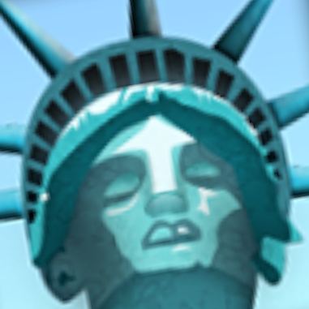
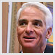
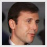
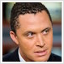
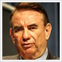
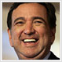

|
 Charlie Crist Taking over from Jeb Bush in 2007, Mr. Crist has governed with a less partisan approach than his predecessor. Forgoing a presidential bid of his own, Crist was a key player during the Florida primary — backing John McCain and later Bush, he called Romney a “deeply unserious” candidate. Despite this, both men are eager to bury the hatchet, and some believe Crist’s gutsy philosophy could mesh well with Romney’s private sector experience. Chief above all of this, Florida remains the most important state in a presidential campaign, and having the governor on the ticket could be a major boon to Romney’s prospects. |
John Edwards Mr. Edwards was stiff competition in the primaries, but maybe the Vice President would like to mend ties. A proud populist who won solid support among America’s working class, Edwards would serve as both an olive branch to the South and the left. His tragic home life, with his wife suffering from late-stage breast cancer, would certainly tug on America’s heartstrings. The only real downside may be that he’s too perfect — there is a sincere concern he may outshine the top of the ticket. |
|
 Tom Kean, Jr. After unseating scandal-ridden incumbent Bob Menendez in 2006, Mr. Kean has proven he is not a fluke. As Senator, Kean voted to acquit President Gore, has towed a moderate line on issues such as education and immigration, and came out strongly against Romney’s campaign during the primary, endorsing John McCain early on. If Romney wants to reach out to the center, Mr. Kean could be key. Kean was reluctant to tell reporters if he’d accept the offer, but his aggression during the primary has all but melted into acceptance for the party’s new nominee. |
 Harold Ford, Jr. Mr. Ford is a mirror image of the POTUS: both are scions of big time Volunteer State political families, President Gore has notably taken an interest in Ford’s career, and if Lieberman wants to mend ties with him, why not pick his top protegé? Ford is a smart, dogged legislator with a strong resumé for his age and a moderate reputation in a swing state — which would normally make him the perfect VP pick, if not for concerns that America just might not be ready to vote for a black man. |
|
 Tommy Thompson A staple of Republican politics since Reagan, Mr. Thompson considered a run for president in his own right, but decided against the idea because of low polling numbers. As a three-term Governor, Thompson had a middle-of-the-road reputation. But after replacing Herb Kohl in the Senate in 2006, Thompson has become much more partisan, voting to convict President Gore despite expectations to the contrary. Romney may see value in picking Thompson, whether it be because of his bipartisan past or attack-dog present. Thompson himself is reportedly lobbying for a spot on the ticket. |
Amy Klobuchar A blizzard from up north, Ms. Klobuchar is making waves as a freshman senator, serving as the floor manager in the fight against the President’s impeachment. Applying her skills from her time as County Attorney, she became a liberal darling after whipping the conviction vote well below a majority. Her selection as vice president would be historic, but maybe too historic. With the race tight, the Vice President may be hesitant to lose votes to the sexism factor. |
|
John Thune Mr. Thune defied expectations by defeating Tim Johnson in 2002, running against a tide of pro-Democrat sentiment only a year after 9/11. Since then, Thune has gone to work, growing popular both in Congress and at home. Although Thune doesn’t have the best name recognition, he may help Romney look more serious, especially with Hill Republicans — Mitch McConnell reportedly blamed Romney’s hardline support of impeachment for Lincoln Chafee’s defection, which lost them the Senate majority. Mr. Thune will also have to consider his own prospects; he’s up for re-election this year, and joining the Romney ticket may come in the way of that. |
 Bill Richardson Mr. Richardson has worn many cowboy hats before his ill-fated, brief presidential bid this year. The UN ambassador and Secretary of Energy for Bill Clinton, Richardson is simultaneously a tough talking populist and backroom fighter, endearing himself both inside and outside the beltway. He is also a longtime friend of the veep’s — making his presidential campaign all the more baffling this year. Despite being a longtime target of GOP barbs, Richardson is the exact kind of populist the VP is most comfortable with — and that may make all the difference. |
by /u/astrohunch_o, /u/StockdaleforTCT, /u/neo1013, and TedThing
A 21st Century TVTV production